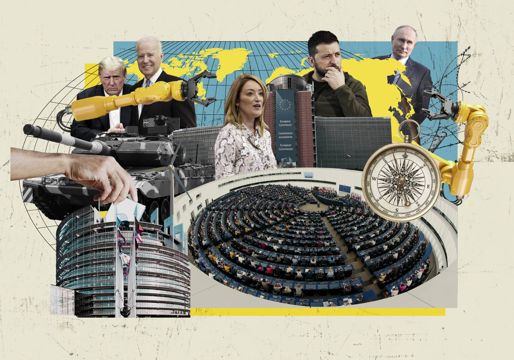

The Eurovaalikone
LADATAAN... PIENI HETKI...
X
Vastaa jokaiseen kysymykseen, oletko väitteen kanssa samaa vai eri mieltä.
Kun olet vastannut kaikkiin kysymyksiin, klikkaa kysymysten lopussa olevaa NÄYTÄ TULOKSET -nappia.
Voit myös muokata vastauksiasi jälkikäteen. Kun olet tehnyt muutokset, klikkaa uudelleen NÄYTÄ TULOKSET -nappia.
Vaalikoneen vastaukset pisteytetään jokaisen kysymyksen osalta laskemalla etäisyys ehdokkaan ja käyttäjän vastauksen välillä.
Jos ehdokas on esimerkiksi vastannut kysymykseen vaihtoehdon numero 1 ja käyttäjä puolestaan 5, tämän kysymyksen vastausten väliseksi etäisyydeksi tulee 4 pistettä. ( 5 - 1 = 4 )
Jos taas ehdokas on vastannut kysymykseen vaihtoehdon numero 4 ja käyttäjä samoin 4, tämän kysymyksen etäisyydeksi tulee 0 pistettä. ( 4 - 4 = 0 )
Ja edelleen, jos ehdokas on vastannut kysymykseen vaihtoehdon numero 2 ja käyttäjä 4, tämän kysymyksen etäisyydeksi tulee 2 pistettä. ( 4 - 2 = 2 )
Etäisyyspisteet lasketaan yhteen jokaisesta kysymyksestä.
Mitä pienempi yhteenlaskettu etäisyyspisteiden määrä on, sitä parempi täsmäävyys ehdokkaan ja käyttäjän välillä on. Näin ollen etäisyyspisteiden yhteismäärä 0 tarkoittaa 100 % täsmäävyyttä.
Vastaavasti etäisyyspisteiden korkein mahdollinen yhteismäärä 108 * tarkoittaa 0 % täsmäävyyttä.
* Yhden kysymyksen osalta käyttäjän ja ehdokkaan vastausten välinen maksimietäisyys on 4 pistettä ( 5 - 1 = 4 ). Näin ollen koko 27-kysymystä käsittävän vaalikoneen osalta yhteenlaskettu maksimietäisyyspistemäärä on 108 pistettä ( 4 x 27 = 108 ).
X
X
X
Tervetuloa The Ulkopolitistin eurovaalikoneeseen! Kuka vuoden 2024 europarlamenttivaalien ehdokkaista on ulkopoliittisissa kysymyksissä kanssasi samalla taajuudella, entä kenen vastaukset resonoivat vähiten?
Pääset vertailemaan omia vastauksiasi ehdokkaiden kanssa, kun olet vastannut kaikkiin alla oleviin kysymyksiin. Voit myös selata ehdokkaiden vastauksia vastaamatta itse kysymyksiin.
***
Vaalikoneemme on osa The Europolitist -sisältökokonaisuutta, jonka The Ulkopolitist toteuttaa yhteistyössä Euroopan parlamentin Suomen-toimiston kanssa.
Muistathan äänestää kesäkuussa käytävissä EU-vaaleissa. Eurovaalit ovat ainutlaatuinen mahdollisuus päättää yhdessä Euroopan unionin tulevaisuudesta. Äänesi ratkaisee sen, ketkä valitaan Euroopan parlamenttiin edustamaan sinua. Vaalipäivä on sunnuntai 9.6.2024 ja ennakkoäänestys järjestetään 29.5.–4.6.2024.
TAI
Lisätietoa vaalikoneesta


The Ulkopolitist on vuonna 2011 perustettu kansainvälisen politiikan ilmiöitä sekä suomalaista ulko- ja turvallisuuspolitiikkaa käsittelevä sitoutumaton verkkolehti.
Kaikki oikeudet pidätetään.
© THE ULKOPOLITIST 2024